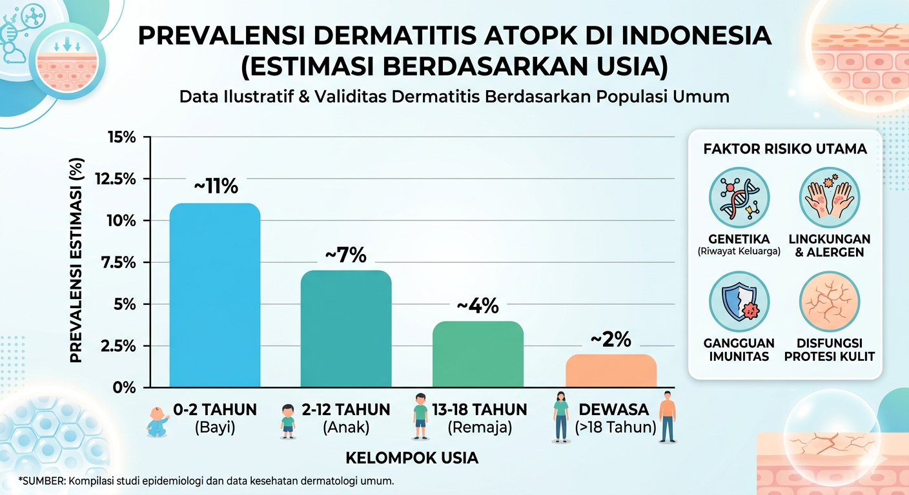
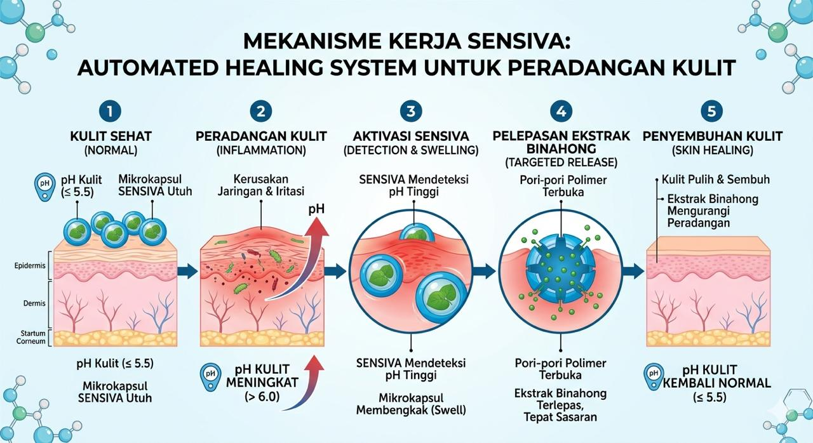
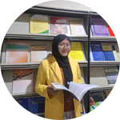
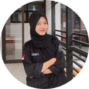

Smart Waste-Derived Biomaterial Therapeutic System untuk Terapi Dermatitis Atopik.

Pengobatan konvensional masih bergantung pada salep kimia (kortikosteroid) yang memiliki efek samping penipisan kulit jika digunakan jangka panjang, serta ketergantungan tinggi pada bahan baku impor.
Mikrokapsul cerdas yang mendeteksi perubahan pH kulit untuk melepaskan obat secara otomatis.
Zat aktif alami dengan senyawa flavonoid sebagai anti-inflamasi dan penyembuh luka.
Sinergi polimer dari limbah perikanan dan pertanian sebagai agen enkapsulasi.
Saat kulit mengalami peradangan, pH kulit akan naik (>6). Kondisi ini memicu mikrokapsul SENSIVA untuk membengkak (swell) dan membuka pori-pori polimer, sehingga ekstrak binahong terlepas tepat sasaran.

Mengolah limbah cangkang udang dan jerami padi menjadi produk medis bernilai ekonomi tinggi.
Mengurangi impor bahan baku farmasi dengan mengoptimalkan kekayaan alam lokal Indonesia.
| Fitur | Salep Konvensional | SENSIVA Textile |
|---|---|---|
| Aplikasi | Dioles Manual | Otomatis (Sistem Wearable) |
| Efek Samping | Resiko Penipisan Kulit | Aman & Terkontrol |
| Bahan | Kimia Sintetik | Biomaterial Organik |
Dosen Pembimbing - Universitas Negeri Semarang

Ketua Tim
Riset Bahan

Teknologi Informasi